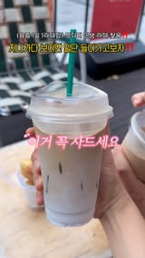
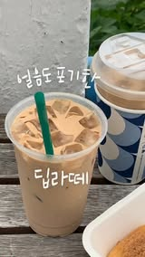
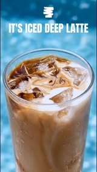

댄싱컵 × 브랜드라이즈
8월 자체 소재 — 촬영 리스트
이번 촬영이 만드는 것
8월 메시지는 "매일 마신다"입니다.
같은 컵을 상황만 바꿔 여러 벌 찍는 것이 이번 촬영의 핵심입니다.
같은 컵을 상황만 바꿔 여러 벌 찍는 것이 이번 촬영의 핵심입니다.
한눈에 보기
물류·인력 판단에 필요한 수치
필요 잔수
25잔
실촬영 20 + 재촬영 여유
총 컷
14컷
컷당 영상 5~10초 병행
카운터 점유
40분
제조·픽업 컷 3개
좌석 점유
1석
약 1시간 30분
잔수가 많은 이유는 아이스라서입니다. 결로와 얼음이 컷의 핵심이라 한 잔으로 여러 컷을 찍으면 녹아서 못 씁니다
촬영 기준 — 7월에 성적이 갈린 지점
상상한 톤이 아니라 이 계정에서 이미 결과가 나온 화면



한 줄 기준 — 광고컷이 아니라 손님이 찍은 것처럼 보이면 합격
A. 데일리 반복 — 5컷
8월 메인 축 · 같은 컵을 다른 날처럼 보이게
매장 부담 —
매장 밖 매장 관여 없음
좌석 테이블 1석
바 점유

A1
손에 든 컵 · 거리
걸으면서 든 컵. 층이 보이는 각도로
매장 밖
A2
손에 든 컵 · 매장 앞
간판·매장이 배경에 들어오게
매장 밖A3
책상·테이블 위
일하는 자리에 놓인 상태
좌석
A4
옷·소품 바꿔 재촬영
A1~A3을 다른 날처럼 한 벌 더
매장 밖A5
컵 여러 개 나란히
며칠치 누적처럼
좌석이 축이 메인배경과 옷만 바꿔 한 번에 찍습니다. 매장 밖 촬영이 많아 매장 부담이 가장 적은 구간입니다
B. 진함 · 시원함 — 4컷
7월에 클릭이 난 지점 · 8월도 폭염이라 그대로 갑니다

B1
얼음 사이 진한 층
위에서 내려찍기. 더워도 진하다
좌석
B2
섞이는 순간 마블링
커피가 우유에 퍼지는 결
좌석
B3
컵 표면 결로
물방울·손자국. 시원함의 증거
좌석
B4
젓기 전 / 젓은 후
색이 안 묽어지는 것을 2컷으로
좌석B1·B4가 7월에 클릭이 난 지점입니다 — 아이스인데도 끝까지 진하다
C. 매장 · 제조 — 3컷
카운터가 필요한 구간 · 이 40분만 조율되면 됩니다

C1
에스프레소 붓는 순간
3~5초 훅용. 여러 테이크 필요

C2
우유 붓는 순간
층이 생기는 과정
C3
컵 건네받는 손
픽업 순간. 매장 접점
여기가 조율 지점이 3컷만 카운터를 씁니다. 합쳐서 30~40분 · 비피크 시간대면 충분합니다
D. 9월 대비 — 2컷
오트 딥라떼(9/15) 비교컷을 위한 기준 확보
D1
우유 붓기 전 베이스
9월 "오트로 바꿔봤어요?" 비교컷 좌측
D2
앵글 고정 기준컷
각도·거리·조명 메모. 9월에 오트로 재현
좌석D2를 지금 잡아두면 9월에 같은 앵글로 오트 버전만 찍어 비교컷이 완성됩니다
매장에 보낼 물류
발주 기준
| 항목 | 수량 | 비고 |
|---|---|---|
| 딥라떼 베이스 | 25잔분 | 실촬영 20 + 재촬영 여유 5 |
| 테이크아웃 컵·뚜껑·빨대 | 30세트 | 컵이 소재의 핵심 — 흠 없는 컵으로 |
| 얼음 | 여유분 | 컷마다 새로 제조 |
| 컵홀더 · 캐리어 | 2~3 | 픽업 컷용 |
확인 요청라인업 컷(오리지널·솔티드·너티 나란히)이 필요하면 솔티드·너티 각 2잔만 추가하면 됩니다
진행 방식 — 바이저 판단
매장 부담을 컷 단위로 나눈 결과
| 구간 | 시간 | 매장 관여 |
|---|---|---|
| 세팅 | 30분 | 없음 |
| A 데일리 반복 | 60분 | 대부분 매장 밖 · 좌석 일부 |
| B 진함·시원함 | 40분 | 좌석 1석 · 음료 순차 제조 |
| C 매장·제조 | 40분 | 카운터 점유 |
| D 9월 대비 | 15분 | 카운터 일부 |
| 정리 | 20분 | 없음 |
| 합계 | 3시간 내외 | 카운터 실점유 40분 |
| 순차 제조 | 25잔을 컷 진행에 맞춰 계속 새로 만들어야 합니다. 미리 만들어두면 녹습니다 |
| 카운터 40분 | 제조·픽업 컷은 손이 화면에 나옵니다. 응대와 겹치면 진행이 끊깁니다 |
비피크(오후 2~4시)에 바이저 한 분이 음료 제조만 전담하시면 3시간 안에 끝납니다. 점주님은 평소대로 운영하시면 됩니다
축소안매장 사정이 어려우면 C·D를 빼고 2시간으로 줄일 수 있습니다. A는 매장 밖이 대부분이라 그대로 두는 쪽이 좋습니다
확인 부탁드릴 것
| 촬영 지점 | 정해지면 그 매장 간판·인테리어가 들어가는 컷을 미리 설계하겠습니다 |
| 촬영 날짜 | 비피크 시간대 기준 |
| 바이저 동행 여부 | 위 부담표 기준으로 판단 부탁드립니다 |
| 라인업 컷 | 솔티드·너티 추가 여부 |
※ 레퍼런스 이미지는 프레이밍 참고용입니다. 실제 촬영은 해당 지점 실물 컵·매장에서 진행합니다